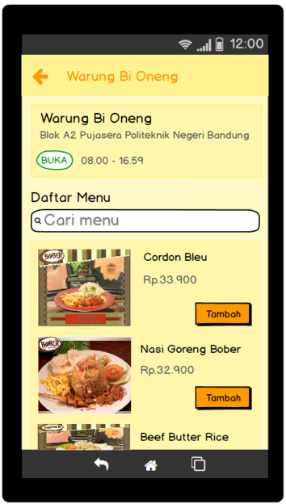
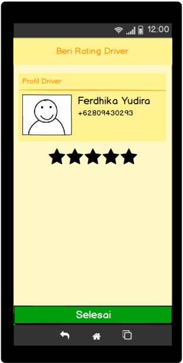

PEMBELI
Tampilan saat pertama aplikasi dibuka.
Tampilan masuk ke aplikasi jika pengguna telah mendaftarkan diri pada aplikasi.
Tampilan form pendaftaran bagi pengguna yang belum memiliki akun untuk memesan makanan.
Tampilan lupa password jika pengguna lupa password akun.
Tampilan awal setelah login. Terdapat gambar banner promosi yang menuju toko jika di pilih/tekan.
Kemudian terdapat form cari makanan atau warung.
Setelah itu ada menu makanan terlaris, menu makanan hemat dan daftar warung.
Dan terdapat juga kategori dari makanan/minuman yang akan memudahkan pembeli dalam mencari makanan yang sedang diinginkan.
Kemudian terdapat form cari makanan atau warung.
Setelah itu ada menu makanan terlaris, menu makanan hemat dan daftar warung.
Dan terdapat juga kategori dari makanan/minuman yang akan memudahkan pembeli dalam mencari makanan yang sedang diinginkan.
Tampilan cari makanan atau warung ini berguna untuk pembeli mencari makanan atau warung yang sedang diinginkan.
Tampilan info akun pembeli untuk mengetahui saldo, merubah info akun pembeli, merubah kata sandi akun, dan merubah bahasa pada aplikasi foodjas.
Tampilan daftar histori pesanan pembeli yang sedang dalam proses.
Tampilan daftar histori pesanan pembeli yang sudah berhasil dipesan dan di terima.
Tampilan daftar semua warung yang ada di PUJASERA POLBAN, dan terdapat form cari warung yang berguna untuk mencari nama warung.
Tampilan halaman makanan terlaris yang sering di beli oleh pembeli lain. Dan dapat mencari makanan yang laris.

Tampilan daftar makanan menu hemat yang ada di pujas, biasanya menu makanan yang sudah di paket dengan harga yang lebih murah.

Tampilan detail warung yang berisi nama warung, lokasi warung, status buka/tutup warung, dan jam operasional.
Terdapat juga daftar menu makanan dari warung tersebut.
Terdapat juga daftar menu makanan dari warung tersebut.
Tampilan keranjang atau pesanan yang akan dipesan oleh pembeli, terdapat menu makanan yang dipesan dan jumah makanan beserta harganya, alamat pembeli atau pengantaran & note pengantaran, dan detail pembayaran yang berisi perkiraan harga makanan yang di pesan, biaya antar dan total pesanan. Juga terdapat metode pembayaran yang di lakukan untuk membayar pesanan.

Tampilan form ubah alamat pengantaran atau alamat pembeli dan memberi catatan pada pengantar.
Tampilan form catatan pada pesanan untuk ditujukan kepada warung yang membuat menu makanan tersebut.
Mencari driver/pengantar yang sedang siap mengantarkan pesanan pada pembeli.
Tampilan rincian pesanan setelah mendapatkan driver/pengantar pesanan. Terdapat info driver yaitu nama, no telepon dan rating driver.
Juga terdapat daftar alamat nama restoran yang pembeli pesan, alamat yang tujuan pemesanan, detail pembayaran, dan daftar pesanan.
Juga terdapat daftar alamat nama restoran yang pembeli pesan, alamat yang tujuan pemesanan, detail pembayaran, dan daftar pesanan.
Tampilan popup konfirmasi pesanan jika makanan telah sampai/telah di terima oleh pembeli.
Tampilan untuk memberikan rating ke driver oleh pembeli.

Tampilan pembeli memberikan 5 rating ke driver.
DRIVER

Tampilan Login bagi pengguna yang sudah memiliki akun.
Tampilan Beranda berisi daftar order yang dapat dikerjakan oleh driver, yang berisi info jarak pengiriman dan total biaya yang harus ditanggung terlebih dahulu oleh driver. Sistem akan menampilkan Daftar Drder jika Driver telah menekan tombol ON, yang artinya Driver siap berkerja
Jika Driver telah menakan salah satu order di Daftar Order maka sistem akan menampilkan tampilan berikut. Tampilan ini berisi informasi berikut :
-Alamat Restoran
-Alamat Antar
-Detail Pembayaran
-Pesanan
-Alamat Restoran
-Alamat Antar
-Detail Pembayaran
-Pesanan
Jika Driver akan menagmbil order tersebut maka Driver harus menekan tombol Ambil, maka sistem akan menampilkan pesan konfirmasi bahwa Driver harus menanggung perkiraan biaya sesuai harga makanan yang dipesan oleh pemesan. Driver dapat mengambil Order dengan menekan tombol Ya
Tampilan berikut akan tampil jika Driver telah mengkonfirmasi order dan melakukan order. Tampilan berikut berisi informasi pesanan dan nama pemesan

Jika Driver telah selesai dengan pekerjaannya maka Driver diharuskan menekan tombol Selesai, maka sistem akan memberikan pesan konfirmasi bahwa pesanan telah selesai dilaksanakan
Tampilan berikut adalah tampilan riwayat order yang telah selesai dikerjakan oleh Driver, yang berisi informasi berupa waktu order tersebut selesai, jarak pengantaran, dan ongkos yang didapat oleh Driver tersebut
Tampilan berikut adalah Tampilan Akun dari Driver tersebut, yang berisi informasi Driver dan pengaturan seperti ubah kata sandi dan ubah bahasa